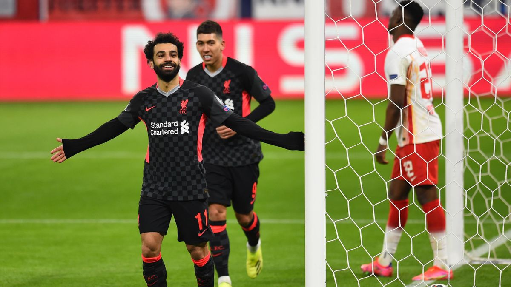
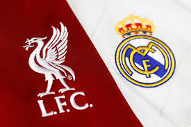

Liverpool go through to the Quarter Finals of the Champions League
Liverpool beat German opposition side RB Leipzig 4-0 on aggregate.Jurgen Klopp's Liverpools side struggled to find the back of the net in the first half but kept on trying missing chances that should of easily been goals.Luckily Liverpools main star Mohammed Salah scored the first goal which changed ther match completely. 4 minutes after Sadio Mane ensured liverpools victory with a great goal. Their hopes of winning a seventh European Cup remain on track and will face off against Real Madrid in the Quartar Finals of the Champions League.
Find out more |Liverpool face off against Real Madrid in the Quarter Finals
Liverpool look for revenge against Real Madrid for the 2018 Champions League Final after Madrid humiliated Liverpool